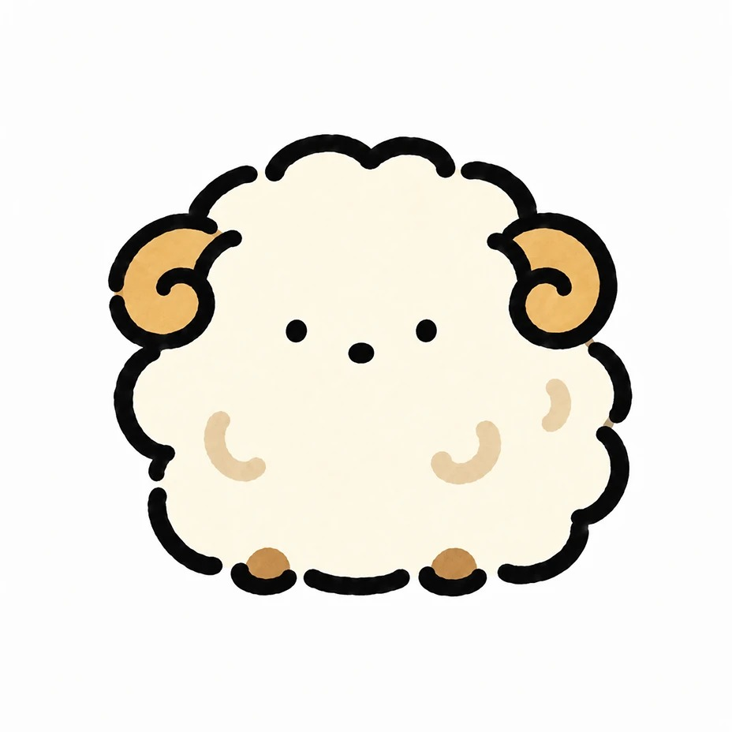

刘松林
SOLIN故乡广东茂名，03年出生，在读研究生，喜欢风光摄影、阅读、逛公园； 比起小狗，更喜欢小猫；喜欢绿色系，最喜欢的颜色是浅浅的鼠尾草绿； 身高175，体重……在增加中；长相嘛，皮肤黝黑，平平无奇； 最喜欢的演员是；最喜欢的摄影师是储卫民（Thomas 看看世界）； 大概就这些，以后应该会补充……
看过的书
READING LIST · 按阅读时间排序-
01 海底两万里
“海洋三部曲”的第二部。博物学家阿龙纳斯在追捕海上“怪物”时落水，被尼摩船长的鹦鹉螺号潜艇救起，从此跟着这艘潜艇穿行海底森林、珊瑚墓园、沉没的大陆与南极冰盖。全书最好看的地方，是那种十九世纪人才有的自信：把当时已知的海洋知识全部写进一场冒险，还顺手预言了后来的潜艇。
-
02 绿野仙踪
美国童话的代表作。小女孩多萝西被龙卷风连人带屋卷到奥兹国，为了回家，她沿着黄砖路去翡翠城找巫师，路上遇见想要脑子的稻草人、想要心的铁皮人和想要胆量的狮子。读的时候年纪小，只觉得热闹；长大再想，四个角色缺的其实都是自己早有的东西。
-
03 三体（三部曲）
从红岸基地那一次朝宇宙的呼叫开始，一个文明的命运被拉长到四百年、再拉长到宇宙的尽头。第一部是悬疑与历史，第二部是博弈与选择，第三部直接把尺度推到维度与时间之外。亚洲第一部拿到雨果奖的长篇科幻，也是最能把“宏大”两个字写到让人后背发凉的一套书。
-
04 红岩
故事发生在重庆解放前夕的渣滓洞与白公馆。江姐、许云峰、成岗这些名字，是在审讯室和牢房里立起来的。书里的酷刑写得克制，真正让人记住的是人在极限处境下还能守住什么。读完再走一遍山城，看那些老街，感觉会不太一样。
-
05 我与地坛
二十出头瘫痪之后，史铁生摇着轮椅进了地坛，一进就是十几年。他在这座荒芜的园子里想明白生死，也一遍遍回想母亲悄悄跟在他身后的那些下午。文字很平，几乎没有修辞，但每一句都落在实处——那种把苦难过成日子的能力，比任何励志都更有说服力。
-
06 平凡的世界（第一部）
一九七五年的黄土高原，孙少安在村里撑着一个穷家，孙少平在县城高中就着雨水吃黑高粱馍。路遥写的是最普通的人的劳动、爱情和自尊，写他们怎样在吃不饱的日子里还想着活得体面。厚，慢，但读进去之后会发现，那种笨拙的坚持离我们并不远。
-
07 射雕英雄传
郭靖天资驽钝，学什么都慢，可偏偏是一步一个脚印走得最远的那个人。从蒙古草原到大宋江湖，江南七怪、洪七公、周伯通各教他一手，最后练成的不是最巧的功夫，而是最正的功夫。金庸把“侠”字写得最透的一本书：武功高低是次要的，紧要关头站不站得住才是。
喜欢的音乐类型
喜欢听国语、粤语，偶尔会听韩语、英语的音乐，也会听一些安静的纯音乐。不怎么听节奏很强烈的纯rap……
在看/看过的动画
ANIMATION · 未列全-
01 凡人修仙传
改编自忘语的同名小说。山村里出来的普通少年韩立，资质平平、出身寒微，靠着一份谨慎和一股狠劲，在弱肉强食的修仙界一步一步往上走。3D 长篇动画把“凡人流”的味道做得很扎实：没有天降的奇缘，只有算计、机缘和一场一场的硬仗，越往后越好看。
-
02 罗小黑战记
一只小黑猫妖精流落人间，被人类少女罗小白捡回家，取名罗小黑。画风极简，节奏舒缓，讲的是妖精与人类如何共处的故事。电影版把这个世界观铺得更大，会馆、领域、执行者一一登场，是国产二维动画里少有的完成度，温柔但不幼稚。
-
03 雾山五行
守护雾山秩序的五行家族传人闻人翊悬，因私自放走麒麟幼兽引出祸端，牵出一连串恩怨。写意的水墨笔触、高饱和的色彩、刀刀见肉的打斗，作画浓烈到近乎“爆”，每一集的信息密度都很大，是那种一眼就能记住风格的动画。
-
04 一人之下
大学生张楚岚本是藏着掖着过日子的“异人”，随着神秘少女冯宝宝闯入生活，一桩二十年前的旧案被慢慢翻出。把道法与异人江湖装进现代都市，人物一个个又痞又真，是国产漫画改编动画里群像塑造最好的一部。
-
05 中国奇谭
一组风格各异的动画短篇：从浪浪山里打工的小猪妖，到水墨市井里的鹅鹅鹅，再到月球上的玉兔号。既是向《天书奇谭》那一代上美影的致敬，也把中国动画的另一种可能摆了出来——不求大而全，一集一个世界，一部一种画风。
-
06 犬夜叉
初中女学生日暮戈薇跌进食骨井，回到战国时代，和半妖犬夜叉一起踏上收集四魂之玉碎片的旅途。它的好看不只在妖怪和打斗，而在每个人物都有自己的来路与执念。小时候守在电视机前追的一部，现在听到前奏还是会想起。
-
07 火影忍者
村子里最捣蛋的吊车尾鸣人，怀揣“成为火影”的梦想一路长大。查克拉、忍术、五影会谈这些设定之外，真正留在记忆里的是“羁绊”二字——鸣人与佐助、师徒与同伴。一部陪着很多人长大的长篇，木叶村的黄昏到现在都记得。
-
08 鬼灭之刃
卖炭少年炭治郎全家遭难，妹妹祢豆子变成鬼，他背着妹妹加入鬼杀队，一路斩鬼寻药。作画与配乐都是顶级配置，但最动人的是“人鬼之间还剩多少人性”这一问。剧场版无限列车篇曾创下日本影史票房纪录。